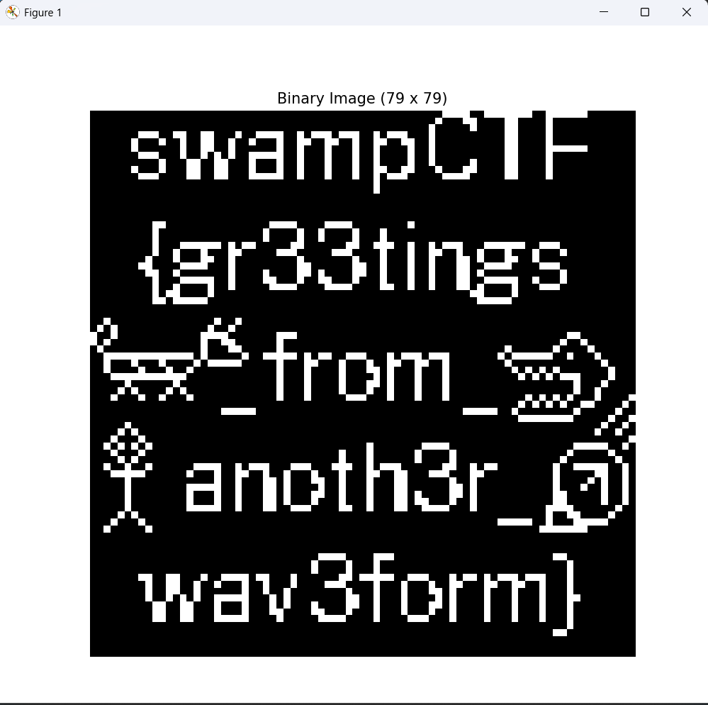

Description
Messages From The Stars
Misc
Worth 193 Points
We recently detected this signal from deep space, we aren’t quite sure what to make of it but we suspect it originated from intelligent life. Want to take a crack at decoding it?
Then it had an attached ‘message_from_the_stars.wav’ file
Solution
After listening to the wav file, I quickly realized that the beeps were supposed to represent 1’s and 0’s, so I wrote a program that took the wav file output the binary representation:
import numpy as np
import scipy.io.wavfile as wav
from scipy.fftpack import fft
import matplotlib.pyplot as plt
def detect_beeps(audio_data, sample_rate, amp_thresh_ratio=0.1, gap_duration=0.01):
"""
Detect beep segments based on amplitude.
Returns a list of (start_sample, end_sample) tuples.
"""
# Normalize audio data
norm_audio = audio_data / np.max(np.abs(audio_data))
# Use a threshold relative to maximum amplitude
amp_thresh = amp_thresh_ratio
# Find indices where the signal is above threshold
indices = np.where(np.abs(norm_audio) > amp_thresh)[0]
if len(indices) == 0:
return []
beep_segments = []
# Use gap_threshold in samples
gap_threshold = int(gap_duration * sample_rate)
start_idx = indices[0]
for i in range(1, len(indices)):
if indices[i] - indices[i-1] > gap_threshold:
# End of a beep detected
end_idx = indices[i-1]
beep_segments.append((start_idx, end_idx))
start_idx = indices[i]
beep_segments.append((start_idx, indices[-1]))
return beep_segments
def dominant_frequency(segment, sample_rate):
"""
Compute the dominant frequency of a given audio segment.
"""
N = len(segment)
fft_vals = np.abs(fft(segment))
freqs = np.fft.fftfreq(N, 1/sample_rate)
# Consider only the positive frequencies
pos_mask = freqs >= 0
freqs = freqs[pos_mask]
fft_vals = fft_vals[pos_mask]
# Return the frequency with maximum magnitude
return freqs[np.argmax(fft_vals)]
def analyze_wav(file_path):
# Load the WAV file
sample_rate, audio_data = wav.read(file_path)
# Convert to mono if stereo
if audio_data.ndim > 1:
audio_data = np.mean(audio_data, axis=1)
# Detect beep segments
beep_segments = detect_beeps(audio_data, sample_rate, amp_thresh_ratio=0.1, gap_duration=0.01)
if not beep_segments:
print("No beeps detected.")
return ""
# For each beep, compute the dominant frequency
beep_frequencies = []
for start, end in beep_segments:
segment = audio_data[start:end+1]
freq = dominant_frequency(segment, sample_rate)
beep_frequencies.append(freq)
# Determine threshold frequency based on the detected frequencies.
# Assuming two distinct clusters, we take the midpoint between min and max.
f_min = min(beep_frequencies)
f_max = max(beep_frequencies)
freq_threshold = (f_min + f_max) / 2
# Build the binary string based on the classification
binary_string = ""
for freq in beep_frequencies:
if freq < freq_threshold:
binary_string += "0"
else:
binary_string += "1"
return binary_string
if __name__ == "__main__":
file_path = "message_from_the_stars.wav"
binary_output = analyze_wav(file_path)
print("Binary output:")
print(binary_output)
And by running this program I got:
0000000000000000000000000000000000000000000000000001111001111111001111110000000000000000000000000000000000000000000000000000000001000110000110000100000000000000000000000000000000000000000000000000000000000001000001000011000010000000000000000000111001100110001001111001011101110010111000100000000001100001000000000000000000100010010011001001000100110011001001100110010000000000110000100000000000000000010000001001100100000010010001000100100001001000000000011000011111100000000000000111000100101010011111001000100010010000100100000000001100001000000000000000000000010001100110001000100100010001001000010010000010000110000100000000000000000010001000110011000100010010001000100110011000100011000011000010000000000000000000111000011001100011111001000100010010111000001111000001100001000000000000000000000000000000000000000000000000000001000000000000000000000000000000000000000000000000000000000000000000000000000000100000000000000000000000000000000000000000000000000000000000000000000000000000000000000000000000000000000000000000000000000000000000000000000000000000000000000000000000000000000000000000000000000000000000000000000000000000000000000000000000000000000000000000000000000000000000000000000000000000000000000000000000000000000000000000000000000000000000000000000000000110000000000000001111000011110000000010000000000000000000000000000000000000000010000000000000001000010010000100010000000000000000000000000000000000000000000001000000000000000100001001000010001000000000000000000000000000000000000000000000100011111101011000001100000011001110010010111000111111001110000000000000000000010010001000110000011100000111000010001001100100100010001000100000000000000000010001000110010000000001000000010001000100100011010001100100000000000000000000011000011110001000000000110000001100100010010001100111100001110000000000000000000110010000000100001000011010000110010001001000110100000000000100000000000000000001000111110010000110001001100010001000100100011001111100100010000000000000000000100100001001000001111000011110000110010010001101000010001110000000000000000000010110000100000000000000000000000000000000000001100001000000000000000000000000001101111100000000000000000000000000000000000000011111000000000000000000000000000000000000000000000000000000000000000000000000000000000000000000000000000000000000000000000000000000000000000000000000000000000000000000000000000000000010000000000000001001000000000000000000000000000000000000000000000000000000000010100000000000001001000000000000000000000000000000000000000000000000000000000010010000000000001111000000011100000000000000000000000000000000000000011000000001010000000000000100110000001000000000000000000000000000000000000000010010000000010000000000000010001100000100000000000000000000000000000000100000010000100000000111111111111101000001001111101011001110001011101110000000101111110010001000000010001000100001011111000001000110001000100110011001000000001000000000000010000001000010001001000000000000100010000100011010001000100000000010101010000000100000011111111111000000000000010001000010000101000100010000000000101010111000010000000010000001000000000000001000100001000110100010001000000000000000000100010000000010100001010000000000000100010000100010010001000100000000000000000010010000000010001001000100000000000010001000001110001000100010000000000010101010001000010000000000000000000000000000000000000000000000000000000000000010101010011000010000000000000000000011111000000000000000000000000000000111110010000000010000010000000000000000000000000000000000000000000000000000000000000000111111110000010010000010000000000000000000000000000000000000000000000000000000000000000000010010000010100000000000000000000000000000000000000000000000000000000000000000010010000010001000000000000000000000000000000000000000000000000000000000000000000000010010101010000000000000000000000000000000100000001111000000000000000000111110010000100010000000000000000000000000000100010000001000010000000000000000100000100000001010000000000000000000000000000010001000000100001000000000000000100000001000010010010000001111001011100011100011100101110000001100101100000000100111110010000111110000001000100110010010001000100011001100011100011000000000010000011001000000100000000000010010001101000110010001000110000001001000000000001000010100100000010000000011111001000110100001001000100011000000110100000000000100010010010000001000000001000100100011010001100100010001101000011010000000000011000001001000000100000000100010010001101000100010001000110110001001000000000001100000100100000010000000011111001000110011100001100100011001111000100000000001111000000100000010100000000000000000000000000000000000000000000000000000000000100110000100000010001000000000000000000000000000000000000000000000000000111110010001111100000010000010000000000000000000000000000000000000000000000000000000011111110000000000000000000000000000000000000000000000000000000000000000000000000000000000000000000000000000000000000000000000000000000000000000000000000000000000000000000000000000000000000000000000000000000000000000000000000000000000000000000000000000000000000000000000000000000000000111100001110000000000000000000000011000000000000000000000000000000000000000000100001000100000000000000000000000000010000000000000000000000000000000000000000010000100010000000000000000000000000001000000000000000011001100010011110110001000000110111110011100010110101110111000100000000000000000100110010010001001000100001110000100010001001100011001100100010000000000000000010011001000000100100100000000100010001000110100001000100010001000000000000000001001010100111110001010000000011001000100001010000100010001000110000000000000000011001100010001000101000100001100100010001101000010001000100010000000000000000001100110001000100011000011000100010001000100100001000100010001000000000000000000110011000111110000100000111100001000011100010000100010001000100000000000000000000000000000000000000000000000000000000000000000000000000000010000000000000000000000000000000000000000000000000000000000000000000000000000110000000000000000000000000000000000000000000000000000000000000000000000000000000000000000000000000000000000000000000000000000000000000000000000000000000000000000000000000000000000000000000000000000000000000000000000000000000000000000000000000000000
So, I thought the next logical step would be to translate this from binary to text, but it produced absolutely nothing of worth, so I got stuck for a bit until one of my teammates Janky recommended that if the number of 1’s and 0’s were semiprime such that the number was a product of exactly 2 prime numbers, you could use the 1’s and 0’s to form an image usings 0’s as a black pixel, and 1’s and a white pixel. (Note, he got this Arecibo message idea from https://www.youtube.com/watch?v=xna-kdXZQHQ&t=526s&ab_channel=Vsauce because Vsauce is absolutely goated like that).
So I checked how many digits there were, and sure enough there were 6241 characters which is semi prime, and is the product of exactly 2 primes numbers, 79x79. So I edited my program to output a map of the 1’s and 0’s as black and white pixels:
import numpy as np
import scipy.io.wavfile as wav
from scipy.fftpack import fft
import matplotlib.pyplot as plt
def detect_beeps(audio_data, sample_rate, amp_thresh_ratio=0.1, gap_duration=0.01):
"""
Detect beep segments based on amplitude.
Returns a list of (start_sample, end_sample) tuples.
"""
# Normalize audio data
norm_audio = audio_data / np.max(np.abs(audio_data))
# Use a threshold relative to maximum amplitude
amp_thresh = amp_thresh_ratio
# Find indices where the signal is above threshold
indices = np.where(np.abs(norm_audio) > amp_thresh)[0]
if len(indices) == 0:
return []
beep_segments = []
# Use gap_threshold in samples
gap_threshold = int(gap_duration * sample_rate)
start_idx = indices[0]
for i in range(1, len(indices)):
if indices[i] - indices[i-1] > gap_threshold:
# End of a beep detected
end_idx = indices[i-1]
beep_segments.append((start_idx, end_idx))
start_idx = indices[i]
beep_segments.append((start_idx, indices[-1]))
return beep_segments
def dominant_frequency(segment, sample_rate):
"""
Compute the dominant frequency of a given audio segment.
"""
N = len(segment)
fft_vals = np.abs(fft(segment))
freqs = np.fft.fftfreq(N, 1/sample_rate)
# Consider only the positive frequencies
pos_mask = freqs >= 0
freqs = freqs[pos_mask]
fft_vals = fft_vals[pos_mask]
# Return the frequency with maximum magnitude
return freqs[np.argmax(fft_vals)]
def analyze_wav(file_path):
# Load the WAV file
sample_rate, audio_data = wav.read(file_path)
# Convert to mono if stereo
if audio_data.ndim > 1:
audio_data = np.mean(audio_data, axis=1)
# Detect beep segments
beep_segments = detect_beeps(audio_data, sample_rate, amp_thresh_ratio=0.1, gap_duration=0.01)
if not beep_segments:
print("No beeps detected.")
return ""
# For each beep, compute the dominant frequency
beep_frequencies = []
for start, end in beep_segments:
segment = audio_data[start:end+1]
freq = dominant_frequency(segment, sample_rate)
beep_frequencies.append(freq)
# Determine threshold frequency based on the detected frequencies.
# Assuming two distinct clusters, we take the midpoint between min and max.
f_min = min(beep_frequencies)
f_max = max(beep_frequencies)
freq_threshold = (f_min + f_max) / 2
# Build the binary string based on the classification
binary_string = ""
for freq in beep_frequencies:
if freq < freq_threshold:
binary_string += "0"
else:
binary_string += "1"
return binary_string
def generate_image_from_binary(binary_string, p1, p2):
"""
Generates and displays an image from the binary string using dimensions p1 x p2.
The binary string is trimmed or padded to exactly p1*p2 bits.
"""
total_bits = p1 * p2
# Trim or pad the binary string as needed
if len(binary_string) > total_bits:
binary_string = binary_string[:total_bits]
else:
binary_string = binary_string.ljust(total_bits, "0")
# Create a numpy array and reshape
grid = np.array(list(binary_string), dtype=int).reshape((p1, p2))
# Display the image
plt.figure(figsize=(8, 8))
plt.imshow(grid, cmap="gray", interpolation="nearest")
plt.title(f"Binary Image ({p1} x {p2})")
plt.axis("off")
plt.show()
if __name__ == "__main__":
file_path = "message_from_the_stars.wav"
binary_output = analyze_wav(file_path)
print("Binary output:")
print(binary_output)
# Create a 79x79 image from the binary output
generate_image_from_binary(binary_output, 79, 79)
After being run, the program gives the following output:

Flag
So, after taking the correct flag from the program output, I get: swampCTF{gr33tings_from_anoth3r_wav3form}